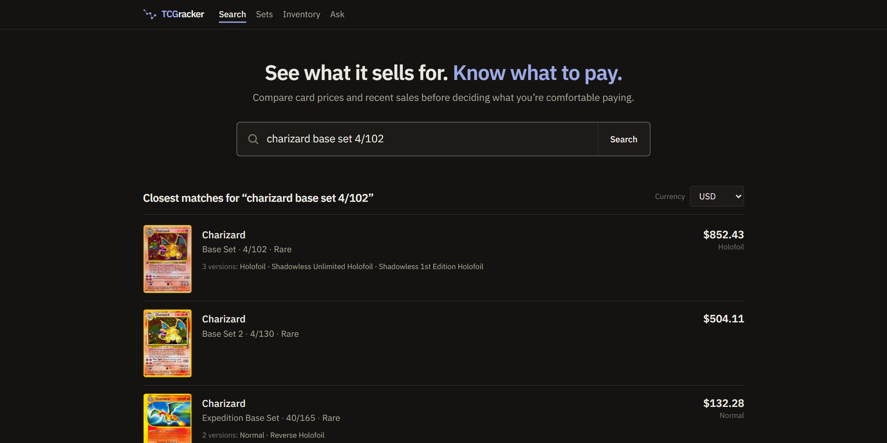
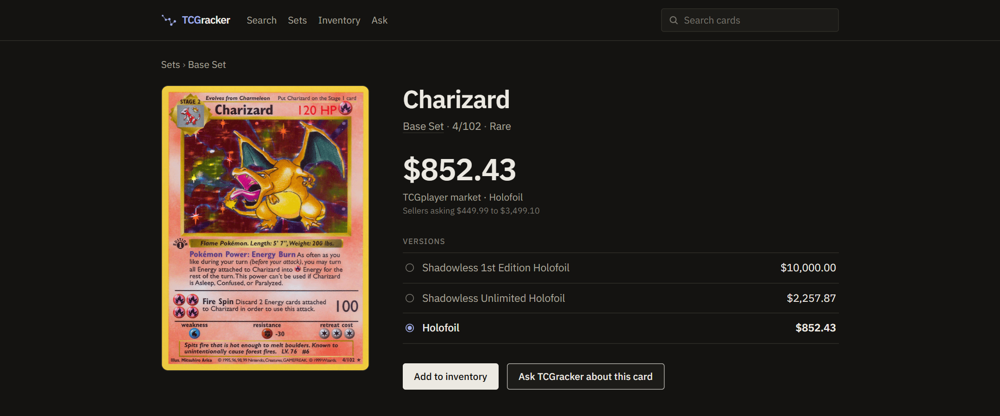
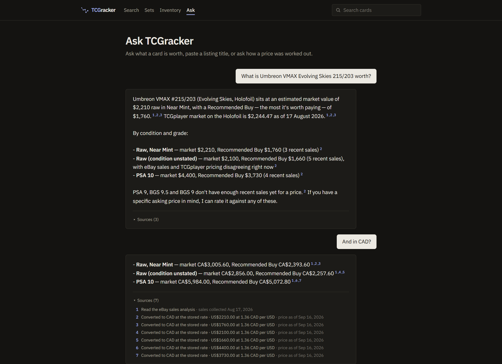
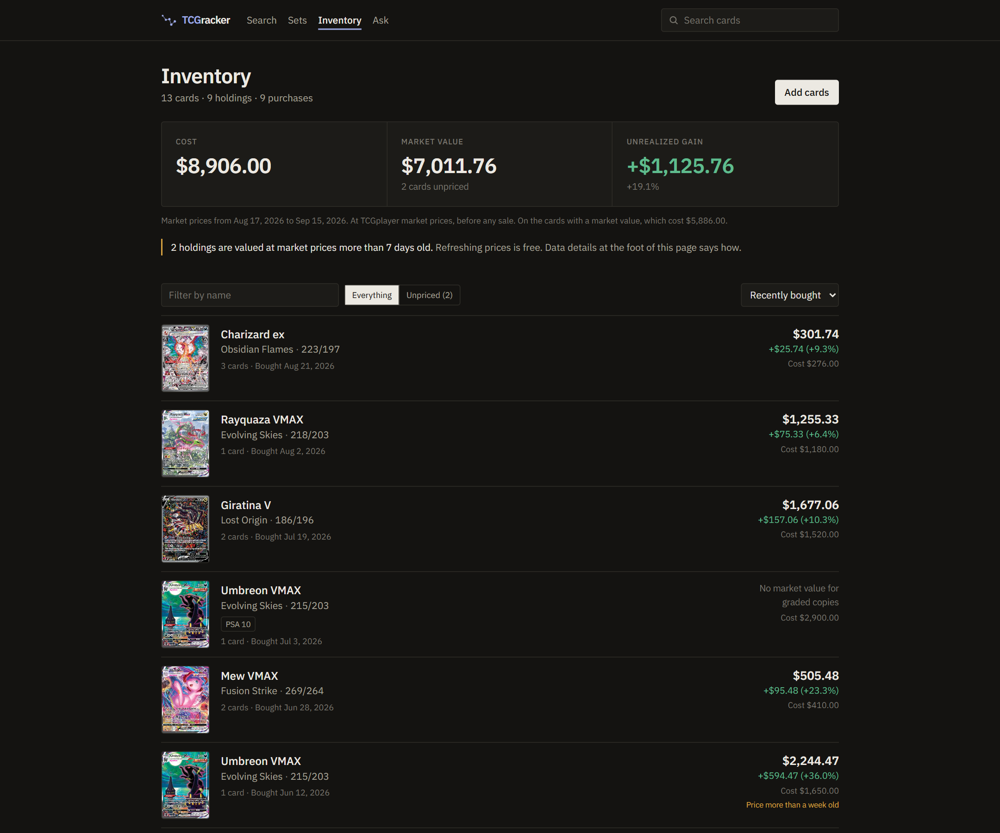
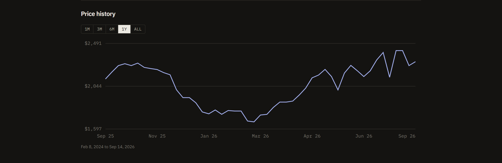

TCGracker
Trading Card Market Intelligence Platform
A full-stack app for Pokémon card pricing. It syncs a 21,000-card catalog, links every card to the exact TCGplayer version it trades as, stores price history and eBay sales, and publishes an explainable “Recommended Buy” price, or says plainly and honestly when theirs not enough evidence to judge off of.
Private repository The implementation lives in a private repo since I may scale it to the public in the future. I still want to show off what we have so far though so here lies a case study ^_^

Motivation
I vend at card shows, and pricing a card on the spot is a real decision with my own money behind it. The current industry standard is Collectr, and I noticed while both buying and vending, I would find myself hitting up tcgplayer, then ebay last sold to comp a cards worth. That left the question, why even use Collectr anyways? All it really did for me was provide an inventory tracking system, but everything it advertises itself as, well, useless or at the very least unpractical (an inventory tracking system alone I figured would be a pretty trivial thing to make, and would outperform the app's bloat). It would also miss recent eBay sold listings, or show me ones that weren’t really the same card. And when it did hand me a number, I had no way to see where that number came from, e.g., the "market price" for a given card would be different from tcgplayer, while also not being transparent with ebay's last sold, which was extremely confusing (just trust me bro?).
So my routine became: check Collectr, then TCGplayer, then eBay last sold. Every card, every time. Which eventually raised the obvious question — why not just cut out step 1?
TCGracker is my answer. Every figure on screen traces back to the sales behind it. Sales are grouped before they’re compared. And when the evidence is too thin, the app says so rather than printing something confident (no trust me bro here!).
A wrong price that looks certain is worse than no price at all. Most of the engineering here is in service of that one idea.
What it does
Find the exact card and version
Messy queries like “moonbreon alt evo skies 215” (or some similar variation) resolve to a card and its market versions. When the query leaves something undecided, the app says so and prompts the user instead of guessing.
Aggregate pricing and history
TCGplayer market prices are the default for every printing a card trades as, with daily price history stored as observations.
Classify and compare sales
eBay sold listings are grouped into comparable markets: same grade, same edition, same printing, same language. Lots, proxies and wrong-card listings are filtered out for accuracy.
Explainable Recommended Buy
A buy price below market reference to account for risk, with a margin built from named, said risks. If the comps disagree or are too few, it refuses with a reason.
Ask TCGracker
A Claude assistant that answers by calling the app’s own services as tools. Every figure it states is re-checked by code, and each fact is traced back to the tool result it came from.
Vendor inventory
Record purchases by version, quantity, price paid and condition. See cost basis, market value and unrealized gain or loss per holding.
Demo





By the numbers
35K+
card market versions indexed
232K+
historical price observations stored
99.4%
correct first result on 823 held-out search queries
56%
faster pipeline re-runs by skipping work already done
Measured in the project’s own evaluation sets on one machine. The 99.4% is Recall@1 for the hybrid retriever; embeddings alone scored 75.6% on the same split. The 56% compares a first 12-step build (7.8 min) with an immediate re-run (3.4 min).
How it fits together
Scripts write and the app reads.
Sources
TCGdex for catalog, TCGCSV and ebay last sold listings for pricing
Ingestion
Pull the data in, link to relevant listings, then normalization and classification
PostgreSQL
Catalog, printings, price history, sales, versioned derived tables
Retrieval & pricing
MiniLM + BM25 search, listing resolver, Recommended Buy engine
Claude assistant
Tool calls over the read layer and grounding check
Next.js frontend
Search, card pages, sets, inventory, Ask feature. Pretty self explanatory
- Raw observations are kept as received. Derived rows (links, versions, classifications, price snapshots, the search index) are labelled with a hash of the rule that produced them, so a rule change adds rows instead of rewriting history.
- Purchases live in a separate database that no market-data script can reach, because the market data is rebuildable and purchases are not.
- 32 automated test suites.
Retrieval and the assistant
Search: hybrid retrieval, deterministic ranking
- Parse the query for card number, printed total, set, edition and finish.
- MiniLM embeddings propose semantic candidates.
- BM25 proposes lexical candidates; the two pools are merged.
- Deterministic rerank: named evidence promotes, demotes or contradicts each candidate.
- Report a status: resolved, ambiguous, under-specified or no match, with the causes.
Ask: tool calling with verification
- Claude chooses tools from eleven read-only wrappers over the app’s own services (search, price, history, comparable sales, deal check, currency).
- Tools return stored facts. No free-text corpus, no document chunks.
- A grounding check re-reads the draft against the tool results: money to the cent, version words from a closed vocabulary, ids, currency conversions with their rate and date.
- One correction is allowed; otherwise the facts ship without prose.
- Provenance maps each sentence to the results it came from, and the page shows the markers.
I initially considered a traditional RAG approach, but as the system evolved I found this system was a better fit for exact market facts. The final architecture returns the correct result first on 99.4% of held-out queries, very accurate.
Decisions worth explaining
Why search uses two methods instead of one
Keyword search (BM25) is great when you type a card number, and honestly kind of bad when you don't. Embeddings (MiniLM) are the opposite: they get the vibe of “moonbreon alt art” but can't be trusted to nail the exact card on their own. So I use both and let a set of plain rules decide the final order (does the number match? the set? the edition?). On my held-out test queries, keywords alone got the right card first 98.9% of the time, embeddings alone 75.6%, and both together 99.4%. That last bit of improvement comes almost entirely from queries with no card number, which went from 87.3% to 94.5%. Those are exactly the searches a real person types.
Why the assistant calls functions instead of reading documents
The usual way to hook an LLM up to your data is to chop it into text, find the relevant chunks, and let the model read them (RAG). That works for docs. It doesn't work for “what did this exact version sell for on this date,” because the answer is a number in a table and any paraphrasing risks getting it slightly wrong, which for pricing is fully wrong. So instead, Claude gets a small set of functions that return the actual rows (search for a card, get its price, list its sales, check a deal), and its only job is to put those results into words. The search engine from above is one of those functions, not the answer itself.
Why rebuilding everything is cheap
Setting the app up from nothing is a 12-step process: sync the catalog, link every card to TCGplayer, import sales, compute prices, build the search index, and so on. Every step remembers what it already did, so running it again skips whatever hasn't changed: cards already stored, price groups unchanged, embeddings reused if the card's text is the same. First build from an empty database is 7.8 minutes; a re-run is 3.4. The biggest win was actually a bug: a cascading delete was quietly throwing away all 35K cached embeddings on every rebuild, so fixing it took the index rebuild from 88 seconds to under one. The whole thing runs off free data sources with paid calls forced off, so I can nuke the database and start over without thinking about it.